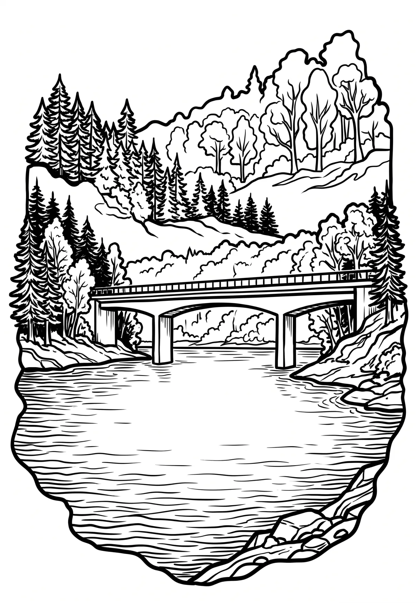

Vodní nádrž Hracholusky
Plzeňský kraj · 358 m n. m.

technická památka · #087
Hracholusky je přehradní nádrž o rozloze 490 ha, nacházející se na hranicích okresů Tachov a Plzeň sever. Přehrada vznikla vybudováním sypané hráze v letech 1959–1964 a zaplavením údolí řeky Mže (na říčním km 22,8). Celková délka vodního díla od jezu pod parkem ve Stříbře až k hrázi je 22 km. Součástí vodního díla jsou dva významné přítoky.